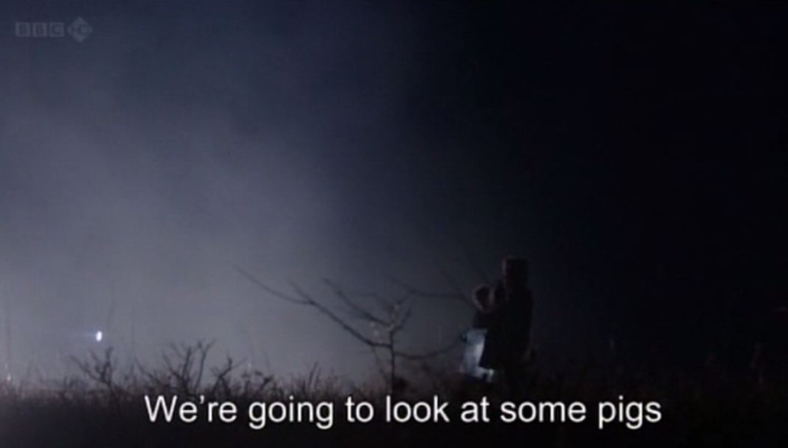

Tuesday, December the 24th, 2013
back to: title, date or indexes
And so our tenth anniversary celebrations come to an end with a piece from earlier this year—Monday 28 January to be precise—purporting to be a diary entry by Captain Nitty from 1954. Here's to another decade of Hooting Yard! And a merry Christmas to you lot!

Last night it was my turn on duty for the nocturnal pig watch. Brandishing my Alpenstock, I set out across the tarputa as night came crashing down. Some say it is an affectation of mine to use a Swiss stick designed for mountainous terrain when crossing the flat wild bleak desolate windswept tarputa. Perhaps it is, but I never leave home without my Alpenstock these days. Some say, also, “Why are there no twilights any more, no dusks?”, and it is true that nowadays day turns to night in a seeming instant. I cannot account for this, so I do not try to. Conjecture would prove fruitless, I fear, and would make no difference. The fact is, as I grasped hold of my Alpenstock and opened the door, there was daylight, and then I stepped out, and as I pulled the door shut behind me, so it was night.
Night—the time when we must keep watch for pigs. It has not always been so. Years ago, if you can believe it, there was not even a Nocturnal Pig Observatory on the tarputa. Apparently, people used to just turn down the lights in their huts and chalets and lie down in their beds and sleep untroubled sleep. It is hard to credit, is it not? Yet it was so. Where the Nocturnal Pig Observatory now stands, “a triumph of filigree in cement” as it has been described, was nothing more than a stretch of flat wild bleak desolate windswept tarputa, identical to the flat wild bleak desolate windswept tarputa surrounding it on all sides as far as the eye can bear to see.
Hammering on the door with my Alpenstock, I summoned the duty pig observer whose shift was at an end. He handed me the cap and the dockets and flips and flaps and scrippies, unfurled his umbrella, and headed out across the night-black tarputa. I settled myself at the console and adjusted the pig scanner. There was a pong from the oil heater but at least I was warm. Outside the wind was howling and the stars were quivering in the heavens. I thought of Beerpint's poem “Wobbly Stars”.
And so I gazed. I gazed, now at the monitors, now out through the reinforced plexiglass pigproof window. I saw no pigs. It was a small mercy. But we must snatch at small mercies, and coddle them close, and cherish them. For not all nights are pigless, on the flat wild bleak desolate windswept tarputa.
Hooting Yard on the Air, January the 31th, 2013 : “Ford Madox Unstrebnodtalb's Diary 15.1.13” (starts around 24:59)
Hooting Yard on the Air, May the 25th, 2017 : “Swan” (starts around 23:50)